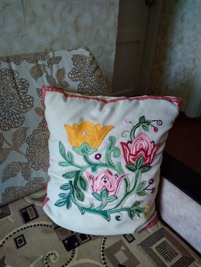

Чехол для подушки размером 50*50см. Вышивка выполнена тамбурным швом, нитками мулине в 2 сложения, на ткани из льна цвета экрю. По периметру всего чехла пришита декоративная тесьма. Я взяла все данные для вязания этой наволочки в журнале ЛЕНА №4 /2007г.